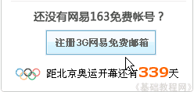
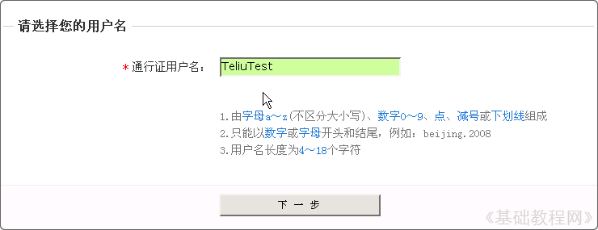
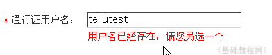
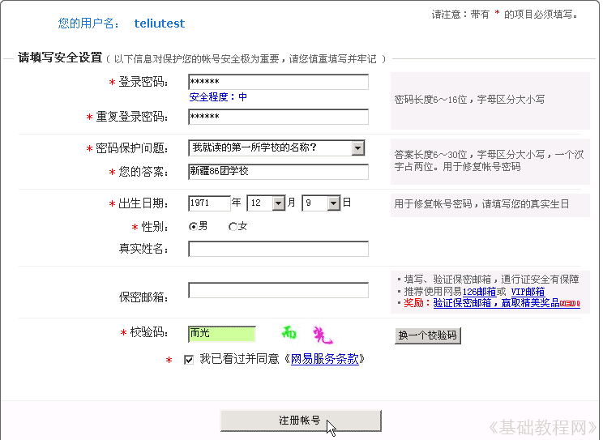
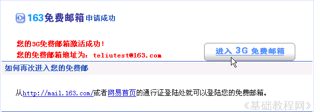

电子邮箱基础入门教程
一、申请邮箱 返回
使用邮箱前要申请一个帐号，常见的免费邮箱有网易、新浪、搜狐等，我们以网易为例来学习如何申请；
1、登录邮箱页面
1）在浏览器地址栏输入网址：http://mail.163.com，按回车键或者点“转到”就可以进入邮箱首页；
2）点击左边的“马上注册”，或者点右边的“注册3G网易免费邮箱”，进入申请页面；

2、申请邮箱
1）在通行证用户名中，输入一个英文的名称，用自己名字的拼音就可以，然后点下面的“下一步”按钮；

如果出现红色提示“用户名已存在”，可以在拼音后面加上数字，再点“下一步”按钮；

2）进入安全设置，一般有密码、保护问题、生日、性别等，
星号*的必填，提前先想好这些，按照从上到下的顺序填写，
密码用数字和字母混合的6位以上，注意大小写，两行输一样的，隐藏了只能看到*号；
密码保护问题，点旁边的小黑三角下拉按钮，选择一个，下面一行输入答案；
生日填真实的也行，重要的个人资料需要保密，校验码是随机产生的汉字，需要正确输入，

输入完了以后，检查一下，找个本子把这些资料抄下来，尤其是密码，然后点下边的“注册帐号”继续；
如果有红色提示错误，看清楚错在哪儿，然后去修改一下；
3）输入正确后，接下来出来“申请成功”，把下面的邮箱地址抄在本子上，这个就可以作为自己的一个联系邮箱地址了；

4）邮箱地址分两部分，左边teliutest是用户名，中间是@，右边是网站名称；
@在键盘的2的上档键，在英文状态下按住Shift键，再按一下2就可以出来；
本节学习了申请邮箱的基本方法，如果你成功地完成了练习，请继续学习下一课内容；
本教程由86团学校TeliuTe制作|著作权所有
基础教程网：http://teliute.org/
美丽的校园……
转载和引用本站内容，请保留作者和本站链接。